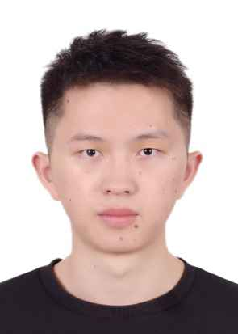

我目前就读于重庆邮电大学，通信与信息工程学院，预计2027年6月毕业。我熟悉 AI Agent 与后端系统开发，熟悉 LangGraph / LangChain 框架与 RAG 全流程工程化落地。 在硕士期间发表 中科院一区 TOP 论文，具备从算法研究到工程实现的完整能力。 热爱构建真实可用的系统，追求代码的可维护性与可观测性。
通信工程 · 硕士 · 通信与信息工程学院 | top 15% · 研究生学业一等奖 · 二等奖
通信工程 · 本科 · 信息工程学院 | GPA 3.20 / 5.0 · top 20%
基于 LangGraph + LangChain 开发的多 Agent 学习助手，支持路由决策、RAG 检索增强、工具调用与流式输出；引入 SQLite 长期记忆与 RAGAS 离线评估，实现可量化迭代优化。
仿微信即时通信后端，支持用户注册登录、好友管理与消息传递。